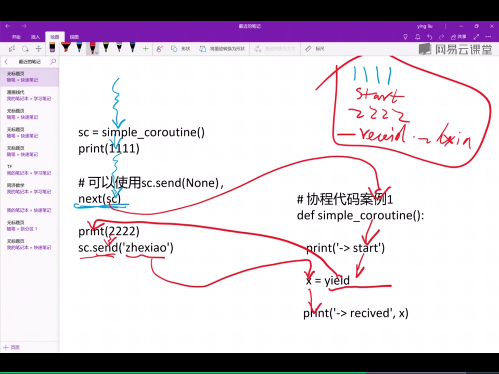
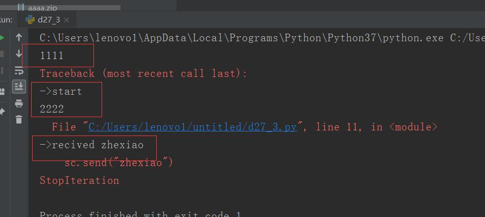
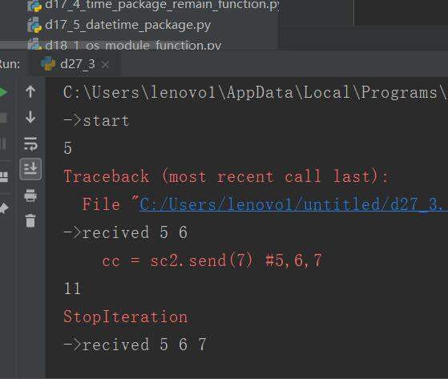

原文出处:本文由博客园博主心悦君兮君不知-睿提供。
原文连接:https://www.cnblogs.com/ruigege0000/p/11601131.html
原文连接:https://www.cnblogs.com/ruigege0000/p/11601131.html
一、协程
1.历史进程：
（1）3.4引入协程，用yield来实现
（2）3.5引入协程语法
（3）实现协程比较好的包有asyncio,tornado,gevent
2.定义：协程是为非抢占式多任务产生子程序的计算机程序组件，协程允许不同入口点在不同位置暂停或开始执行程序
3.从技术角度讲，协程就是一个可以暂停执行的函数，或者干脆把协程理解为一个生成器
4.协程对资源的消耗很小，要比多进程消耗的资源小多了，因此多并发下，协程更节省资源。
5.协程的实现
（1）yield返回；（2）send调用
（3）协程的三个状态：
inspect.geigeneratorstate(...)函数确定，该函数会返回下面的字符串中的一个：
GEN_CREATED:等待开始执行
GEN_RUNNING:解释器正在执行
GEN_SUSPENED:在yield表达式处暂停
GEN_CLOSED:执行结束
next预激（prime）
6.举例子（注意里面的注释）
def simple_coroutine():
print("->start")
x = yield#这个函数执行到这里停止了，等待着给它赋值，也就是后面的send语句
print("->recived",x)
#主线程
sc = simple_coroutine()
print(1111)
#可以使用sc.send(None),效果一样
next(sc)#预激
print(2222)
sc.send("zhexiao")
执行顺序过程如下：

执行结果：

7,既返回值又用send语句的代码
注意：
可以看出这个yield相当于return 语句通过后面的send，之后等价于input语句
def simple_coroutine2(a):
print("->start")
b = yield a#可以看出这个yield相当于return 语句通过后面的send，之后等价于input语句
print("->recived",a,b)
c = yield a+b
print("->recived",a,b,c)
sc2 = simple_coroutine2(5)
aa = next(sc2)
print(aa)
bb = sc2.send(6) #5,6
print(bb)
cc = sc2.send(7) #5,6,7
print(cc)

8.协程异常
协程中未处理的异常会向上冒泡，传给next函数或者send方法的调用方（即触发协程的对象）
停止协程的一种方法：发送某个哨符值，让协程退出，内置的None和Ellipsis等常量经常用作哨符值
二、源码
d27_3_usage_of_coroutine.py
https://github.com/ruigege66/Python_learning/blob/master/d27_3_usage_of_coroutine.py
2.CSDN：https://blog.csdn.net/weixin_44630050（心悦君兮君不知-睿）
3.博客园：https://www.cnblogs.com/ruigege0000/
4.欢迎关注微信公众号：傅里叶变换，个人公众号，仅用于学习交流，后台回复”礼包“，获取大数据学习资料